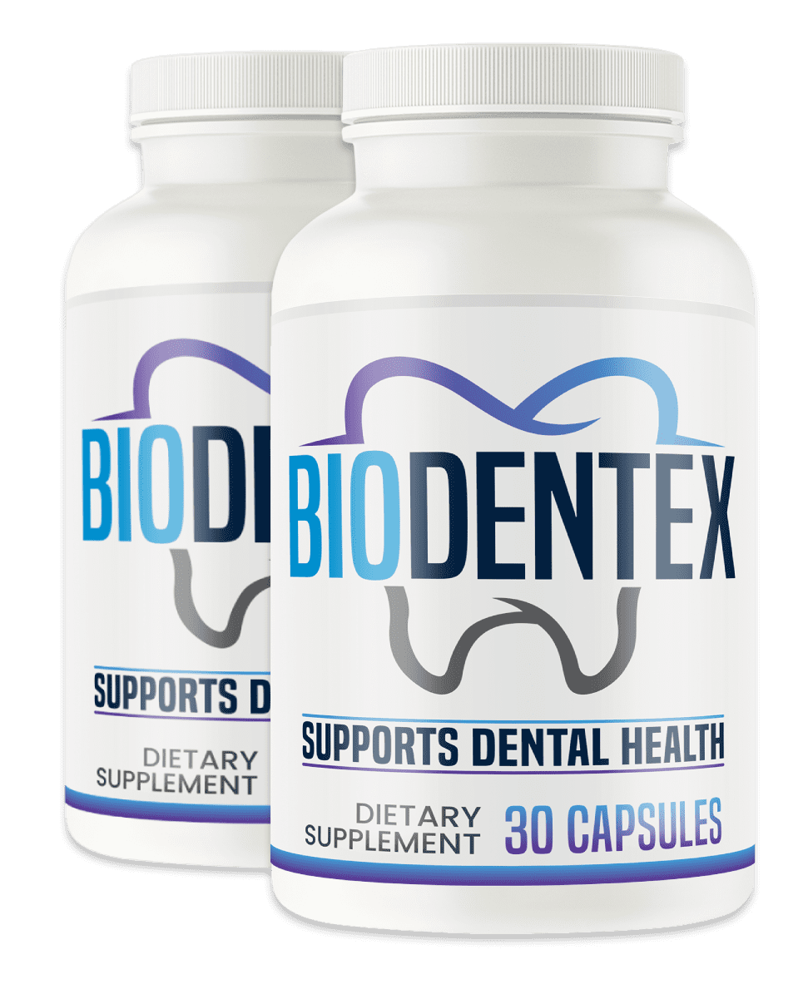

What Is BioDentex And How Does It Work?
Most people blame their toothpaste when their gums start bleeding or their breath turns sour. The real problem is usually deeper — in a layer nobody brushes.
Underneath the enamel and along the gum line, your mouth runs on a mineral balance that keeps teeth hard, gums tight, and bacteria in check. Dentists call it the mineral shield. When that shield is intact, plaque has nowhere to anchor, saliva stays alkaline, and the colonies of bacteria that cause bad breath and gum irritation never gain a foothold. The trouble is that coffee, sugar, acidic foods, and even some mouthwashes strip it down year after year. By the time you notice sensitive teeth or receding gums, the mineral shield has been thinning for a long time.
BioDentex is a daily supplement built around restoring that shield from the inside. Instead of coating the surface with chemicals that rinse away in minutes, it delivers six plant-derived compounds that feed the same mineral and pH pathways your mouth already uses to protect itself. Think of it like fertilizing a garden that has been running on depleted soil — the roots are still there, they just need the right nutrients to grow back strong.
One serving daily with water, no complicated protocol. The formula reaches the oral environment through saliva and systemic circulation, working quietly alongside regular brushing and flossing. It is built for adults who are tired of hearing "you need another crown" at every checkup and want something that addresses the root cause rather than patching one tooth at a time.
BioDentex is not a weekend fix. The mineral shield did not erode overnight, and rebuilding it takes consistency. The recommended window is three to six months of daily use, giving the formula enough time to restore what years of wear have taken away.
BioDentex Ingredients
Every serving delivers a proprietary blend of six natural ingredients, each one targeting a different pillar of the mineral shield — pH balance, oral flora, gum integrity, enamel strength, saliva quality, and fresh breath.
- Xylitol Powder: A natural sugar alcohol that starves the bacteria responsible for plaque and acid production. Xylitol shifts oral pH toward alkaline, creating an environment where healthy flora thrives and cavity-causing strains struggle to survive. It is one of the most extensively studied compounds in preventive dentistry.
- Stevia: Far more than a sweetener. Stevia supports healthy gum tissue by promoting a balanced bacterial environment in the mouth. It contributes to clean teeth and fresher breath without feeding the acid-producing organisms that conventional sugars attract.
- Carrot Powder: A dense source of beta-carotene and minerals that nourish the connective tissue holding teeth in place. Carrot powder provides immune-level support for oral wellness, reinforcing the gum structure from the nutritional side.
- Grape Seed Extract: Rich in proanthocyanidins — powerful antioxidants that protect oral tissues from oxidative damage and support the mineral matrix that keeps enamel dense and resistant. Grape seed extract helps maintain the structural integrity of both teeth and gums.
- Peppermint: Stimulates healthy saliva flow, the mouth's own rinsing mechanism. Peppermint delivers lasting oral comfort and a clean, refreshed mouthfeel while naturally neutralizing the volatile compounds behind persistent bad breath.
- Cranberries: The anti-adhesion specialist. Cranberry compounds make it harder for harmful bacteria to cling to teeth and gum surfaces, helping maintain a balanced oral environment where healthy flora can dominate.
The six ingredients do not work in isolation. Xylitol and stevia shift the pH; carrot powder and grape seed extract rebuild the mineral layer; peppermint keeps saliva flowing; cranberries prevent the bad bacteria from getting a grip. Together, they reconstruct the conditions your mouth needs to defend itself.
BioDentex Side Effects
BioDentex contains plant-based nutrients that the body already recognizes — xylitol, stevia, carrot powder, grape seed extract, peppermint, and cranberries. These are food-grade compounds, not synthetic chemicals that force a reaction.
The formula is free from stimulants, habit-forming substances, gluten, and GMOs. Every batch is manufactured in the United States from carefully sourced ingredients, following strict quality standards throughout production.
There are no widespread reports of adverse effects among users taking BioDentex at the recommended daily serving. The absence of harsh chemicals, artificial additives, and pharmaceutical agents means the formula works with the body's natural processes rather than overriding them.
As with any dietary supplement, anyone with an existing medical condition or currently taking prescription medication should consult a healthcare professional before starting.
BioDentex Dosage
Each bottle of BioDentex provides a full supply at the recommended dose of one serving per day — taken with a glass of water, no special timing required. That is the entire protocol.
The formula also comes in multi-bottle options. A three-bottle package covers a 90-day stretch, and a six-bottle package extends to a full 180 days. The larger bundles lower the per-bottle cost and include bonus guides on natural smile care and overall wellness — practical additions for anyone committing to the longer timeline.
Consistency matters more than anything else with BioDentex. The mineral shield did not thin out in a week, and it will not rebuild in one either. Most users describe the clearest changes after three to six months of uninterrupted daily use. That is the window the formula needs to shift pH, rebalance flora, and strengthen the mineral layer that protects teeth and gums from the inside.
Do not exceed the recommended daily serving.
BioDentex – Refund Policy
Every order of BioDentex is protected by a 180-day money-back guarantee. That is six full months to take the formula daily and judge the results for yourself.
The guarantee exists because the team behind BioDentex is confident enough in what the formula delivers to let the product prove itself on your schedule. A 180-day window lines up precisely with the recommended usage period — the stretch where the mineral shield has time to rebuild and the changes become something you notice in the mirror and at the dentist's chair.
For complete terms and conditions, the official BioDentex website has the details.
BioDentex Customer Reviews
 Justin Randall
Anchorage, AK
Verified Purchase – 6 Bottles
Justin Randall
Anchorage, AK
Verified Purchase – 6 Bottles
"I have not been able to eat cold food in years. Ice cream, cold water, anything below room temperature sent a jolt straight through my front teeth that made me flinch in public. My dentist kept recommending sensitivity toothpaste and I went through tube after tube with nothing to show for it. A coworker mentioned BioDentex and I figured another bottle of something could not make it worse. Around the six-week mark I bit into a popsicle my grandson handed me without even thinking. No jolt. I just stood there for a second, processing the fact that nothing had happened. By month three I was drinking iced coffee again. My wife says I smile more now. I think she is right."
 Laurie Winter
Savannah, GA
Verified Purchase – 3 Bottles
Laurie Winter
Savannah, GA
Verified Purchase – 3 Bottles
"Morning breath had become an all-day problem for me. I was chewing gum constantly, carrying mouthwash in my purse, turning my head during conversations. My daughter once told me she could smell it from across the table and I wanted to disappear. I started BioDentex mostly out of desperation. The first thing I noticed after about three weeks was that the gum I kept buying was lasting longer because I was reaching for it less. A month in, I woke up one morning and the usual stale taste just was not there. I leaned over and asked my husband point-blank and he said it was fine. That had not happened in a long time. I am on my third bottle now and my gums look pinker, tighter. The bleeding when I floss has stopped completely."
 Andy Drury
Rochester, NY
Verified Purchase – 6 Bottles
Andy Drury
Rochester, NY
Verified Purchase – 6 Bottles
"Every single dental appointment for the last five years ended with the same speech — you need a deep cleaning, your gums are receding, we should talk about a graft. I felt like I was just handing money over and watching my mouth fall apart anyway. I found BioDentex through a forum where someone mentioned it alongside a bunch of other stuff they had tried. I almost did not order it. Glad I did. After about two months my hygienist measured my gum pockets and three of them had improved by a full millimeter. She asked me what I had changed. I told her and she just shrugged, but the numbers were right there on her chart. I am four months in and for the first time in years I am not dreading my next visit."
BioDentex – Where To Buy
BioDentex is not available on Amazon, eBay, Walmart, or any other third-party marketplace. The manufacturer distributes exclusively through the official website, and there is a practical reason behind it.
Oral supplements sold through unauthorized resellers carry real risk. Expired batches, broken seals, improper storage, and outright counterfeits are documented problems on major marketplaces — and none of those purchases qualify for the 180-day money-back guarantee or direct customer support. Buying from a reseller means giving up every safety net the manufacturer built into the purchasing process.
The official website is also the only place to access the multi-bottle bundles that include the bonus guides and the lowest per-unit pricing. Verifying that you are on the correct domain before completing checkout takes a few seconds and eliminates the guesswork.
To ensure you're getting the authentic product, most users choose to visit the official website directly.
Is BioDentex A Scam?
Bleeding gums and sensitive teeth are not minor inconveniences. They are the visible edge of a problem that runs deeper — a mineral shield that has been quietly eroding for years while you threw money at toothpaste brands and dental visits that only patched the surface.
BioDentex does not appear to be a scam. It is a legitimate formula built on six plant-based ingredients with documented roles in oral health — xylitol, stevia, carrot powder, grape seed extract, peppermint, and cranberries. The production follows strict quality standards in the United States, and the 180-day guarantee gives every buyer six months of coverage with nothing at stake but time.
The mineral shield approach makes sense on a straightforward level: restore the conditions the mouth needs to defend itself, instead of covering up symptoms with chemicals that rinse off. The testimonials from verified purchasers line up with what the formula promises — gradual, cumulative improvement over weeks and months, not overnight miracles.
That said, no supplement replaces professional dental care, and individual results depend on factors the formula cannot control. If you have spent years cycling through sensitivity products and still dread the dentist's chair, this is a different angle worth trying. If it is not for you, that is genuinely fine — the guarantee means you are not locked in.
Try it. Use it daily for a few months. If nothing changes, you send it back and you are out nothing but a little patience.
As with any dietary supplement, consult a healthcare professional if you have an existing medical condition or take prescription medication.

For those who want to verify product details or check current availability, the official BioDentex website remains the safest and most reliable option.